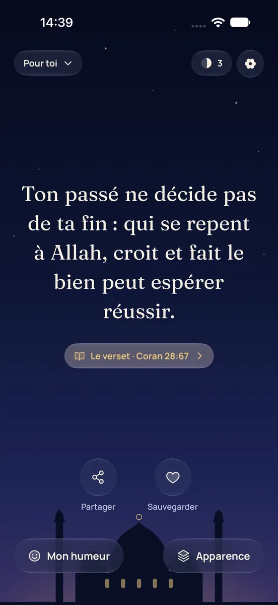
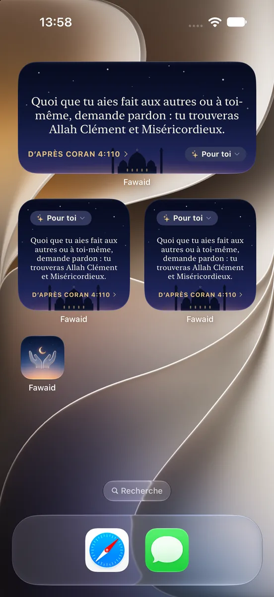
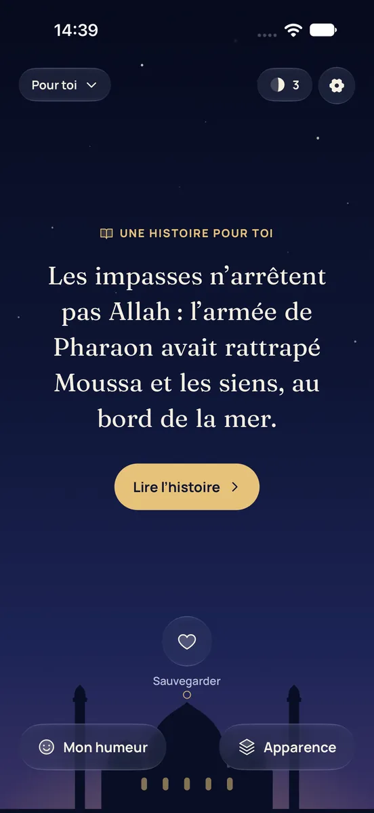
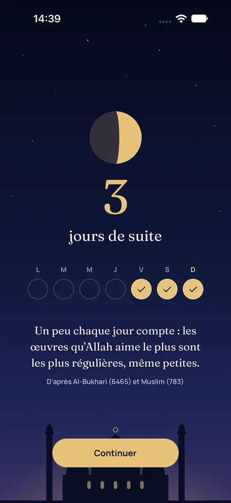

Quoi que tu ressentes, l’islam a les mots.
Fawaid te donne le verset, le hadith ou l’histoire vraie qui parle de ce que tu vis. Dans ton fil, et sur ton écran d’accueil avant le scroll.

Dis ce que tu ressens
Tristesse, stress, solitude, regrets, ou au contraire gratitude et motivation : choisis parmi 21 humeurs, et ton fil se remplit des textes qui en parlent.
« Pour toi » mélange tout, et apprend de ce que tu sauvegardes et partages. Tout reste sur ton téléphone.

Le rappel avant le scroll
Le widget pose un rappel sur ton écran d’accueil ou ton écran verrouillé. Tu changes d’humeur depuis le widget, sans ouvrir l’app, et un appui ouvre le texte complet.
Tu choisis combien de rappels tu veux par jour, et entre quelles heures.

Des histoires vraies
Moussa devant la mer, la patience d’Ayoub, les jeunes de la caverne : des récits du Coran et de la Sunna, racontés simplement, pour se rappeler qu’Allah ouvre un chemin là où on n’en voit pas.

Un peu chaque jour
Chaque jour où tu ouvres Fawaid, la lune grandit. « Les œuvres qu’Allah aime le plus sont les plus régulières, même petites » (d’après Al-Bukhari et Muslim).
Des textes qu’on peut vérifier
- Les versets du Coran en arabe, avec leurs traductions reconnues.
- Des hadiths authentiques, avec leur source et leur degré d’authenticité.
- Chaque texte s’ouvre avec sa référence complète.
- Que du positif : l’espoir, la patience, le pardon, la confiance en Allah.
7 jours pour tout essayer
- Toutes les humeurs, les histoires, les styles du widget et les rappels.
- Rien à payer aujourd’hui. On te prévient 2 jours avant la fin.
- Annulable à tout moment dans les réglages de ton iPhone.
Questions
C’est gratuit ?
Tu peux tout essayer pendant 7 jours sans rien payer. Ensuite, c’est un abonnement à l’année ou au mois, annulable à tout moment. Sans abonnement, des textes restent offerts chaque jour.
D’où viennent les textes ?
Du Coran et des hadiths authentiques, avec leurs traductions reconnues. La phrase affichée en grand dit en quelques mots le sens du texte, sans rien y ajouter ; le texte complet s’ouvre d’un appui. Tout est détaillé dans l’aide.
Mes réponses sont-elles partagées ?
Non. Ce que tu ressens, ta foi, ta prière et tes épreuves restent sur ton téléphone. Pas de compte, pas de publicité, aucun outil de suivi. Voir la confidentialité.
Dans quelles langues ?
En français, en anglais, en turc et en arabe. L’app suit la langue de ton iPhone.
Et sur Android ?
Fawaid est pour l’instant sur iPhone. Écris-nous si tu veux être prévenu.
Fawaid sur iPhone
Télécharge Fawaid sur l’App Store. Une question, une idée ? Écris-nous à contact@playfawazir.com.